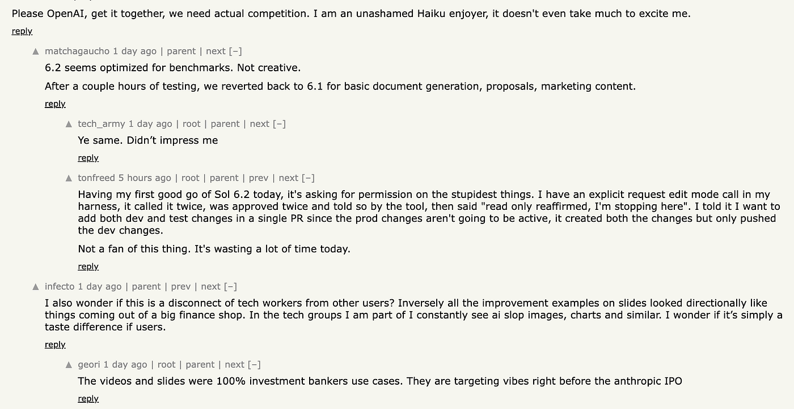
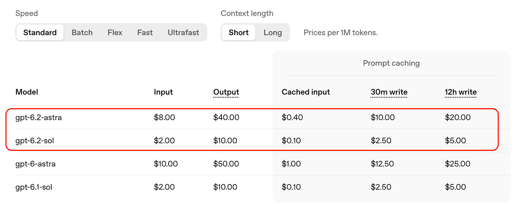
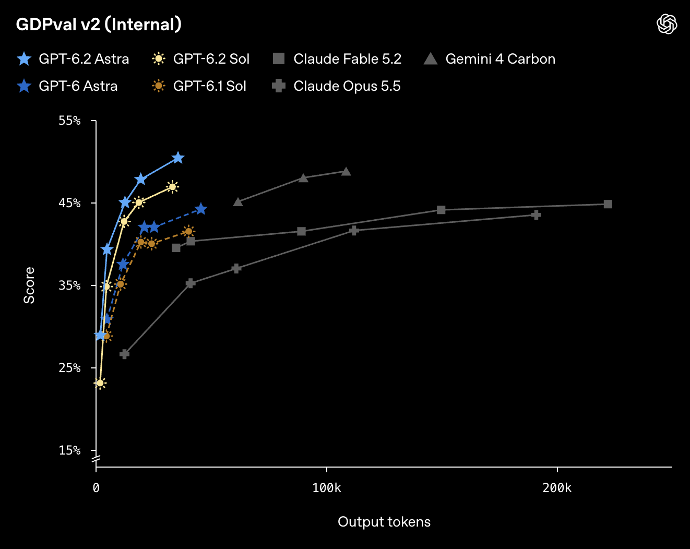
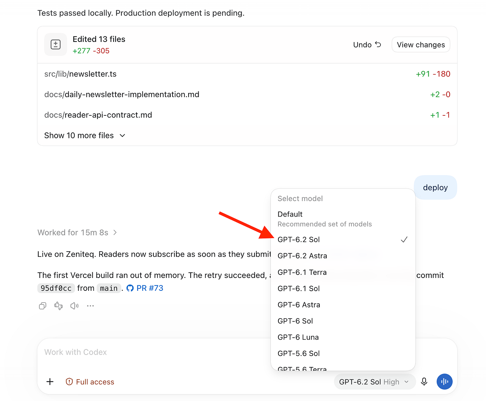
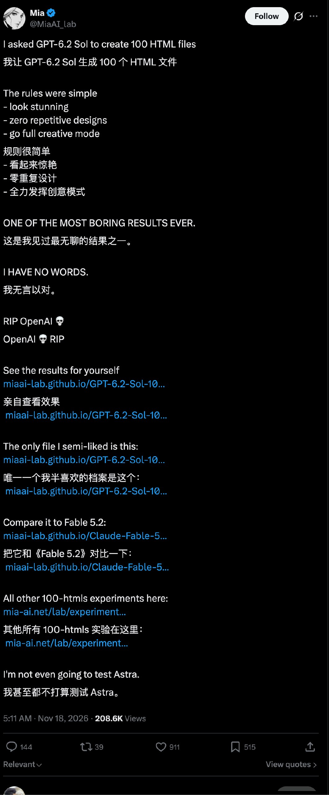
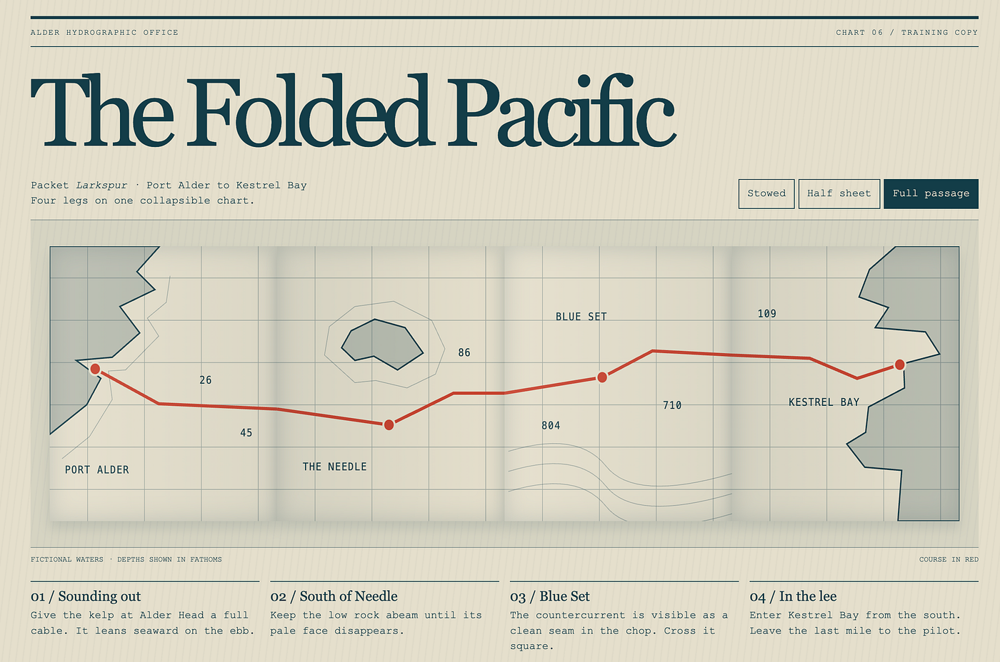

OpenAI GPT-6.2 拉了?
几天前，OpenAI 正式发布了 GPT-6.2 Astra 与 GPT-6.2 Sol。
正常来说，这是 OpenAI 迄今为止推出的最强的两款模型，尽管纸面参数和各项指标相当亮眼，但用户群（尤其是开发者群体）的实际反馈却十分惨淡。
Hacker News 上的发布讨论帖目前已收获超过 1,300 个点赞和 800 多条评论，其中充斥着大量的吐槽与批评。
几天前，OpenAI 正式发布了 GPT-6.2 Astra 与 GPT-6.2 Sol。
正常来说，这是 OpenAI 迄今为止推出的最强的两款模型，尽管纸面参数和各项指标相当亮眼，但用户群（尤其是开发者群体）的实际反馈却十分惨淡。
Hacker News 上的发布讨论帖目前已收获超过 1,300 个点赞和 800 多条评论，其中充斥着大量的吐槽与批评。

在 X 上，几位 AI 领域大 V 甚至公开表示，他们非常厌恶使用这款新旗舰模型。关于具体细节，我会在后文进一步展开。
我翻阅了一下大家的负面反馈，并仔细研读了官方公布的模型规格说明，对于 OpenAI 为何会以这种状态推出模型，我有一些自己的推测，这很可能与 Anthropic 本周正式上市有着密切关联。
在深入梳理负面反馈之前，先聊聊 GPT-6.2 Astra 和 GPT-6.2 Sol 具体带来了哪些更新。
OpenAI 将 Astra 定位为面向高难度复杂项目的前沿旗舰模型；Sol 则是体量更小、成本更低的轻量模型，适用于一些简要的日常任务。
我首先关注到的是价格变化：https://developers.openai.com/api/docs/pricing
6.2 Astra 现在的定价为每百万输入 Token 8 美元、每百万输出 Token 40 美元，相比 GPT-6 Astra 便宜了 20%；缓存命中后的输入价格更是降低了 60%，仅需 0.40 美元。

Sol 则维持了与 GPT-6.1 Sol 相同的定价：每百万输入 Token 2 美元，每百万输出 Token 10 美元。
此外，OpenAI 还强调这两款模型在完成高要求复杂任务时所消耗的输出 Token 更少。在官方内部的 GDPval v2 基准测试中，6.2 Astra 比 GPT-6 Astra 高出 6.2 分，同时输出 Token 减少了 22%。

GDPval v2 由金融、数据科学、生物技术和市场营销等真实项目中的长期复杂知识工作任务组成。
PS：这个“减少 22%”的细节，在我看来，正是这个版本引发种种问题的关键原因之一，后文我会专门分析。
除此之外，还有以下几点值得一提：
在 Codex 上，这两款模型也已经正式上架：

OpenAI 此前明确承诺：使用 Astra 构建的前端界面会更加美观易用，生成的幻灯片和文档也会显著减少 AI 味。
但用户吐槽最多的恰恰就是这两个点。
在逛 X 时，我注意到一条热议推文（https://x.com/MiaAI_lab/status/2122799702185738616）。博主 Mia 用 GPT-6.2 Sol 生成了 100 个 HTML 页面文件：https://miaai-lab.github.io/GPT-6.2-Sol-100-HTML-Files/。

其中有一个示例页面，展示了一个折叠手风琴图表（accordion chart）：https://miaai-lab.github.io/GPT-6.2-Sol-100-HTML-Files/001-the-folded-pacific.html。点击展开后，它会呈现一段虚构航行路线的四个航段：从出发地海岬处漂浮的海带林，一路延伸至茶隼湾后方平静的水域。
生成该页面的提示词如下：
Prompt（提示词）：
为定期班轮“飞燕草号”（Larkspur）设计一张虚构海图，展示其从桤木港（Port Alder）到茶隼湾（Kestrel Bay）的四段航程。页面整体需呈现出 20 世纪中叶水道测量局那种沉稳严谨的专业质感。配色使用仿旧纸色 #e5dfcc、深青蓝 #143d48 和朱红 #c84330。在左对齐的巨大 Georgia 字体标题上方，放置小号等宽字体的海图元数据；下方接一个横向宽幅的四折手风琴图表，包含细致的纬线标尺、虚构岛屿、水深标注以及朱红色的航线轨迹。
海图折痕要有清晰的立体棱纹感，四周留出逼真的物理留白边距。提供三个切换标签：收纳折叠（Stowed）、半开（Half sheet）与完整航线（Full passage）。展开时采用带有物理重感、时长 820 毫秒的铰链过渡动效，逐层显现每个图板，平抑透视形变，并在动画停稳展平时重新连合航线接缝。折叠状态下，海图在视觉上应为一个完整物件；展开后，重点突出四条独立的航海日志记录。注明海图纯属虚构，并编写几段贴合航海实际的甲板记录文案，具体提及海藻床、逆流与下风向进港路线。若开启“减弱动态效果”（reduced motion），以直接的静态状态切换取代折叠动画。移动端将日志记录改为垂直堆叠排列，确保海图始终保持在视口范围内。
下图是 GPT-6.2 Sol 的实际生成效果：

GPT-6.2 Sol 生成的“折叠太平洋（The Folded Pacific）”页面。
乍看之下整体效果尚可，但作为一名经常使用 GPT 模型生成网页的开发者，这种视觉审美依然带有一眼可见的“AI 感”。
因篇幅限制，完整长文请移步微信公众号『墨筝』